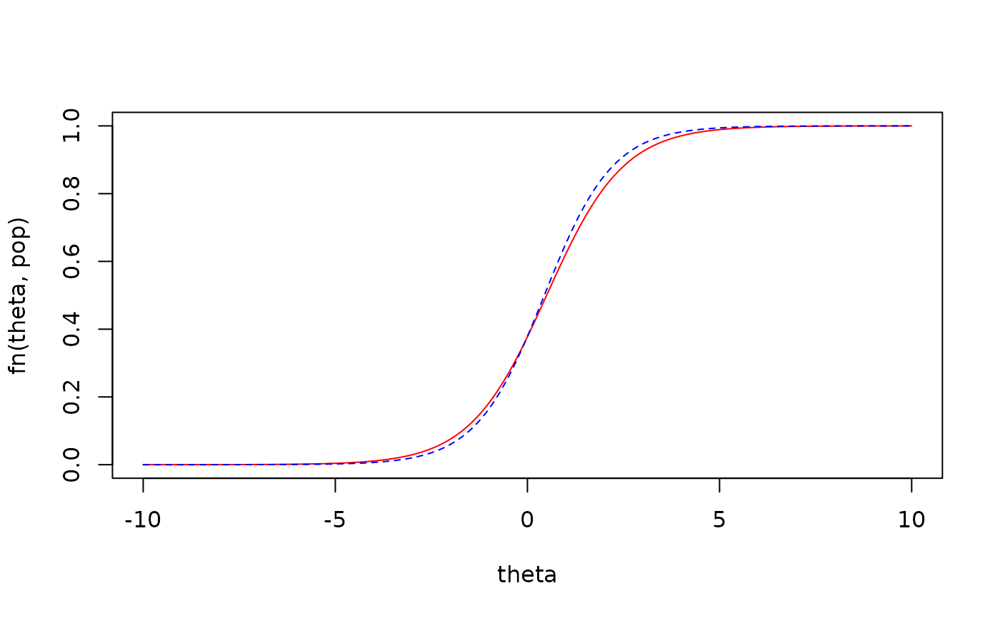

Computes the average/cumulative deviation given two continuous functions and an optional function representing the probability density function. Only one-dimensional integration is supported.
IRMSE(
estimate,
parameter,
fn,
density = function(theta, ...) 1,
lower = -Inf,
upper = Inf,
...
)a vector of parameter estimates
a vector of population parameters
a continuous function where the first argument is to be integrated and the second argument is a vector of parameters or parameter estimates. This function represents a implied continuous function which uses the sample estimates or population parameters
(optional) a density function used to marginalize (i.e., average), where the first
argument is to be integrated, and must be of the form density(theta, ...) or
density(theta, param1, param2), where param1 is a placeholder name for the
hyper-parameters associated with the probability density function. If omitted then
the cumulative different between the respective functions will be computed instead
lower bound to begin numerical integration from
upper bound to finish numerical integration to
additional parameters to pass to fnest, fnparam, density,
and integrate,
returns a single numeric term indicating the average/cumulative deviation
given the supplied continuous functions
The integrated root mean-square error (IRMSE) is of the form $$IRMSE(\theta) = \sqrt{\int [f(\theta, \hat{\psi}) - f(\theta, \psi)]^2 g(\theta, ...)}$$ where \(g(\theta, ...)\) is the density function used to marginalize the continuous sample (\(f(\theta, \hat{\psi})\)) and population (\(f(\theta, \psi)\)) functions.
Chalmers, R. P., & Adkins, M. C. (2020). Writing Effective and Reliable Monte Carlo Simulations
with the SimDesign Package. The Quantitative Methods for Psychology, 16(4), 248-280.
doi:10.20982/tqmp.16.4.p248
Sigal, M. J., & Chalmers, R. P. (2016). Play it again: Teaching statistics with Monte
Carlo simulation. Journal of Statistics Education, 24(3), 136-156.
doi:10.1080/10691898.2016.1246953
# logistic regression function with one slope and intercept
fn <- function(theta, param) 1 / (1 + exp(-(param[1] + param[2] * theta)))
# sample and population sets
est <- c(-0.4951, 1.1253)
pop <- c(-0.5, 1)
theta <- seq(-10,10,length.out=1000)
plot(theta, fn(theta, pop), type = 'l', col='red', ylim = c(0,1))
lines(theta, fn(theta, est), col='blue', lty=2)

# cumulative result (i.e., standard integral)
IRMSE(est, pop, fn)
#> [1] 0.05879362
# integrated RMSE result by marginalizing over a N(0,1) distribution
den <- function(theta, mean, sd) dnorm(theta, mean=mean, sd=sd)
IRMSE(est, pop, fn, den, mean=0, sd=1)
#> [1] 0.01933435
# this specification is equivalent to the above
den2 <- function(theta, ...) dnorm(theta, ...)
IRMSE(est, pop, fn, den2, mean=0, sd=1)
#> [1] 0.01933435